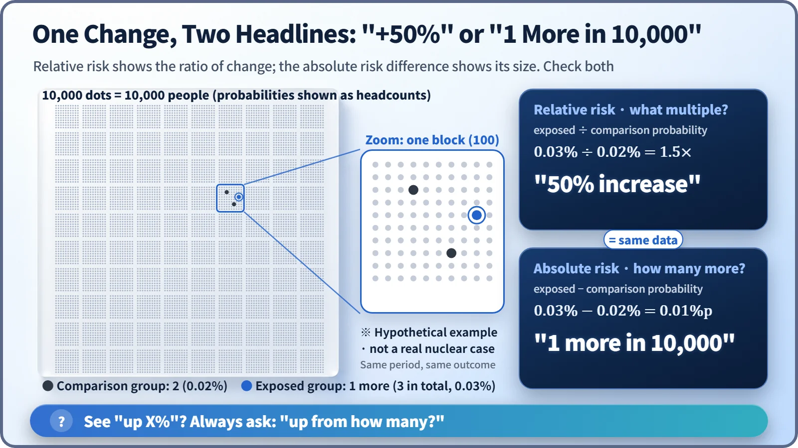

Society, Environment & the Future · 300
Read It Like a Nutrition Label — Five Checks for Reading Nuclear Information
Per what, compared with what, percent or people, detected or dangerous, and who measured it when and where: five lines for reading any nuclear claim.
Before reacting to a claim about radiation, read it like a nutrition label. Check what was measured and per what, what it is compared with, whether it is a percentage or an actual number of people, whether "detected" is being confused with "dangerous," and who measured it, when and where. [1]
A headline with no numbers in it
"Radioactive material detected in seawater off Region X… fears of a 50% rise in risk." A headline like that makes your heart skip. Yet it contains no real numbers: not what was found or how much, not what the 50% is compared with, not who measured it and when. There are things to check before you get alarmed.
You already have the habit. On a snack's nutrition label you check whether "150 kcal" is per serving or for the whole bag; you ask "less than what?" when the front says "50% less sodium"; you know "trans fat 0 g" may be printed whenever the amount is below a set level; and you check the date and origin. Nuclear information can be read with the same five lines.
Line one: start with "per what"
Three units come up again and again. The becquerel (Bq) counts how many atoms decay each second: how strong the radioactive material in a substance is. The gray (Gy) is the energy absorbed by 1 kg of tissue or material, and the sievert (Sv) expresses the effect on the body, taking into account the type of radiation and the sensitivity of each organ. Remember one thing: a Bq number and an Sv number cannot be compared head to head. [2]
Then look at the "per what" after the unit. The same Bq can be per kilogram or per liter; the same Sv per hour, per year or per exposure. A year has 8,760 hours, so mixing up "per hour" and "per year" means misreading by a factor of thousands, the same trap as the serving size on a nutrition label.
Line two: put it on a ruler
A number standing alone tells you nothing about size; set it next to familiar references. On this ladder, each rung up is 10 times bigger.
![Logarithmic effective dose ladder from 0.1 microsieverts to 1 sievert, one rung per factor of ten, marking one banana at about 0.0001 millisieverts, a dental X-ray at about 0.005, a chest X-ray at about 0.1, a Seoul to New York round trip at 0.1 to 0.2, world average natural radiation at about 3.0 per year and an abdomen and pelvis CT at about 7 to 10, with dashed limit lines at 1 millisievert per year for the public and 50 per year and 100 over five years for workers, and a grey reference band near 1 sievert for acute effects](../../assets/images/theory/300-reading-nuclear-information/fig1-dose-ladder.webp)
| Example | Dose | Per what |
|---|---|---|
| One banana | about 0.0001 mSv | once |
| Dental X-ray | about 0.005 mSv | once |
| Chest X-ray | about 0.1 mSv | once |
| Seoul–New York-class flight | about 0.1–0.2 mSv | round trip |
| Natural radiation, world average (UNSCEAR 2024) | about 3.0 mSv | per year |
| Abdomen-and-pelvis CT | about 7–10 mSv | once |
| Public dose limit (artificial sources) | 1 mSv | per year |
| Radiation worker limits | 50 mSv / 100 mSv | any one year / five years |
UNSCEAR's 2024 report puts the world average natural dose from the ground, the air and space at about 3.0 mSv per year, and South Korea's level is usually given as around 3 mSv per year. [3] The dose limits are a different kind of number: management ceilings set to keep doses prudently low, not cliff edges where harm suddenly begins. [2] Near 1 Sv at the top is another story: when the whole body absorbs about 1 Gy or more in a short time, acute symptoms begin to appear. Such effects are judged in Gy, so that band is only a reference, a full 10 million times the banana. [4] And the same height doesn't mean the same conditions; once or accumulated over a year, read the tag too.
Line three: "what percent," or "how many people"?
Take a made-up example just for the arithmetic. If something used to happen to 2 people in 10,000 and now happens to 3, then 3 ÷ 2 = 1.5, and "a 50% increase" is correct. That is relative risk:
Relative risk = probability in the exposed group ÷ probability in the comparison group
Subtract instead and the actual difference is 1 person in 10,000, the absolute risk difference: from 0.02% to 0.03%, an increase of 0.01 percentage points.

Neither one is wrong; you need both to judge the size. Whenever you hear "twice as much," ask, "Twice what, to begin with?"
Line four: "detected" does not mean "dangerous"
"Radioactive material detected" means that the measuring equipment picked it up, not that the amount is dangerous. Every measurement has a detection limit, below which "present" and "absent" cannot be told apart. Measure longer or use better equipment and it drops, so yesterday's "not detected" can become today's "detected." Likewise, "not detected" means "below the threshold," not zero.
South Korea's standard for radioactive cesium in food is 100 Bq per kilogram; the Codex Alimentarius guideline level is 1,000 Bq per kilogram. In South Korea's imported-food inspections, even tiny amounts of around 1 Bq per kilogram are treated as "detected." So look for how many Bq/kg it was and what the standard is. Some radioactive substances, such as potassium-40, also occur naturally in food and in our bodies. [5]
Line five: check the date and the origin
- Who: tell the primary source of the raw measurements apart from an article or screenshot passing it along. The IAEA, UNSCEAR and the World Health Organization publish data internationally; in South Korea, the Nuclear Safety and Security Commission and the Korea Institute of Nuclear Safety (KINS) do, including a national network of real-time radiation readings, and the food safety ministry publishes imported-food results. See whether several sources agree.
- When: values right after an accident differ from normal ones, rain briefly raises dose rates by washing natural radioactive substances out of the air, and reference data get revised (the average natural dose went from 2.4 to 3.0 mSv). Check the date.
- Where: a plant boundary or a city, air, water or soil: each changes what the number means.
Key takeaways
Back to that headline: how many Bq/L was it? What are the standard and the detection limit? Fifty percent of how many people? Who measured it, when and where? If those questions have answers, judge calmly; if not, the article hasn't yet given you what you need. No call for blind reassurance, nor for blind fear.
From the size of a single atomic nucleus, through reactors, safety and the environment, to nuclear energy in society, this series has walked a long road. It ends here, but these five lines will keep working every time you meet nuclear news. Thank you for reading to the end.